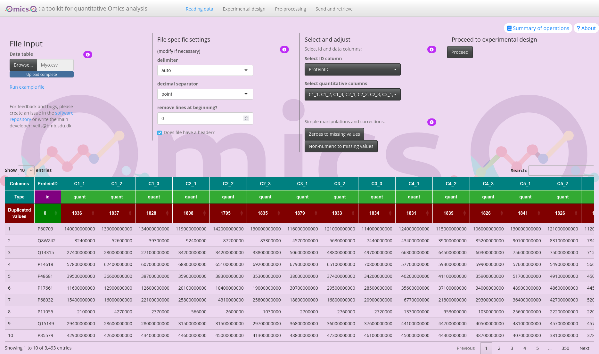
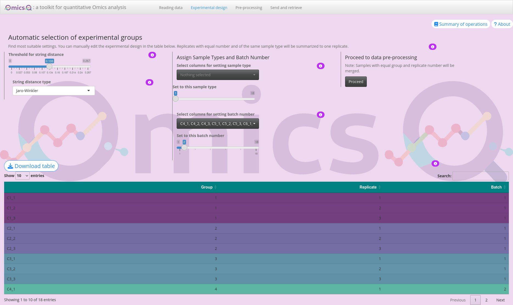
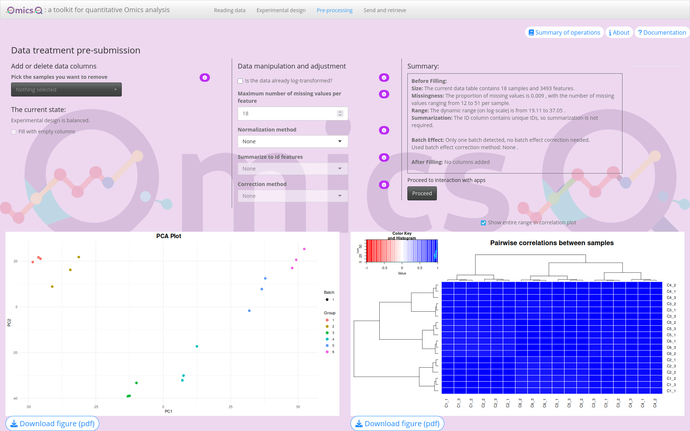
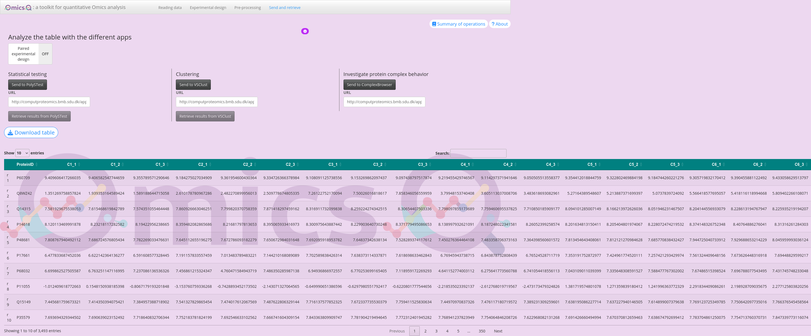
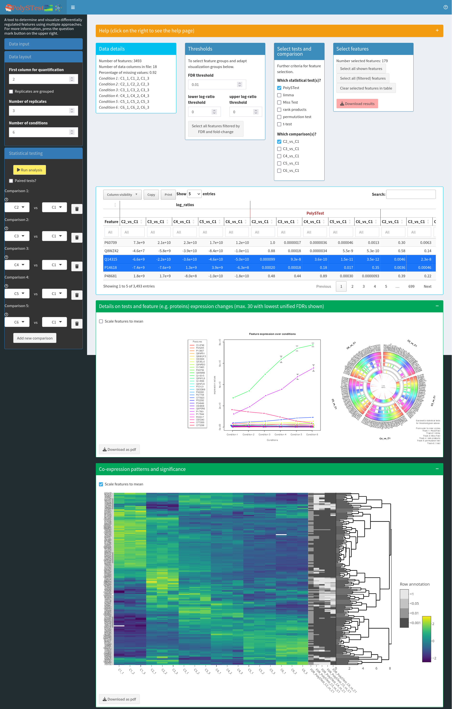
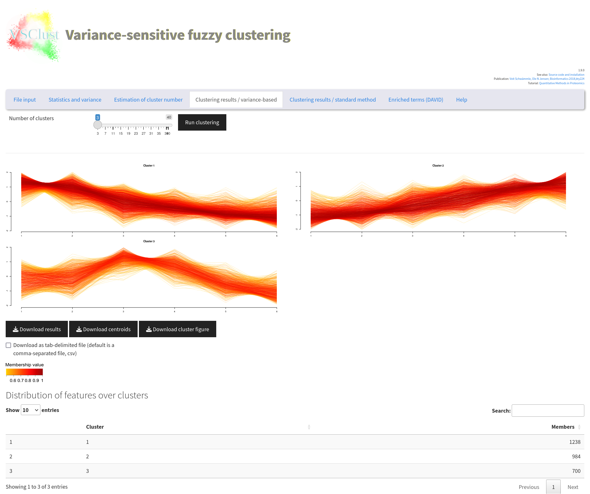
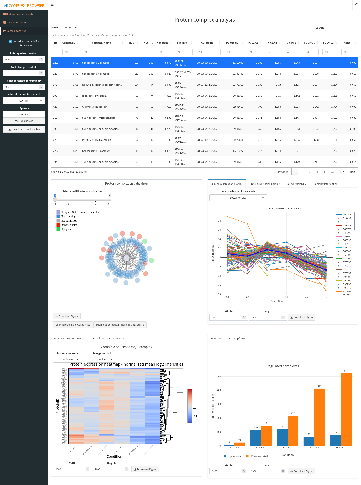

OmicsQ — Documentation and Tutorial
Introduction
OmicsQ is a modular Shiny application that streamlines the workflow of quantitative omics data analysis without the need to impute missing values. This tutorial will guide you through all the major steps — from importing your data, annotating your experimental design, and applying pre-processing methods, to sending your finalized dataset to dedicated external apps for statistical testing, clustering, or complex behavior analysis.
General remarks
Online documentation: Further information about the different operations of the user interface are available through the information () buttons.
Recording carried operations: To ensure reproducibility of the results, all data processing steps are available through Summary of operations.
Brief overview: Each of the following sections is represented by a different tab in OmicsQ:
- Upload and verify your files (e.g., Excel or CSV/TSV).
- Adjust file-specific settings such as delimiters, decimal separators, etc.
- Automatically or manually assign sample groups, replicates, and batch labels.
- Ensure your design is correct.
- Apply transformations (e.g., logarithmic), normalization, and summarization.
- Remove features or samples with too many missing values
- Check and correct for batch effects.
Step 4: Further Integrated Analysis
- Send processed data to specialized tools, such as PolySTest for statistical analysis, VSClust for clustering, or ComplexBrowser to explore protein complexes.
- Retrieve and incorporate results back into OmicsQ for having a single file with all information.
Layout: Each of these sections consist of documentation of the different features and a tutorial part. The tutorial part is meant to guide you through the different steps of the analysis. By the end of this tutorial, you will have a fully processed dataset aligned with your experimental design and enriched with features for further biological interpreation — all managed within a single Shiny application. Whether you are working with proteomics, transcriptomics, or other omics data, OmicsQ’s flexible modules offer an interactive and user-friendly approach.
Literature and further materials
The OmicsQ manuscript: in preparation
For the publications of the other apps, see the section About the external Apps
Step 1: Data Import
In this part of OmicsQ, you will upload your data file containing the quantifications of biomolecules across different samples and make any quick, simple adjustments to ensure the input data is ready for further analysis. Below are the features you see on your screen and how to use them:
1. File Input
Upload your file: Click Browse to select a file from your computer. Alternatively, you can use the example file. Supported file types typically include Excel (.xls or .xlsx) and text-based formats such as CSV or TSV.
Run example file: Click Run example file to load a ready-to-use test dataset. This is useful if you want to explore the interface and its features.
Feedback and issue reporting: Find the link to OmicsQ’s open source software repository for raising issues, or to contact the main developer for additional support. There is more information via the ?About button in the upper right of the user interface.
Tutorial
Download the example file containing protein abundances of an cell differentiation experiment from the GitHub repository here. You can use the download raw file button for direct download. Then upload the file into OmicsQ.
2. File-Specific Settings
Once you upload a file, OmicsQ will automatically detect if it is an Excel or a CSV/TSV file and determine the layout. Depending on the file type, different settings appear:
- For Excel: You may select the sheet if your Excel file has multiple worksheets.
- For CSV/TSV or other text files: You will see options to specify:
- Delimiter (e.g., commas, semicolons, tabs)
- Decimal separator (e.g., period
.or comma,)
- Skip lines at the beginning to ignore extra header lines
- Indicate if the file has a header row
If the automatic detection looks correct, you can keep the default settings. If not, simply adjust these fields to properly format your data.
Tutorial
The file should have read correctly. However, there are many duplicated values which could be of concern.
We usually do not expect getting duplicated values when the instruments provide sufficient precision in its measurements. However, in this case the values have been rounded quite stringently previously leading to the duplications.
Note: Missing values are not considered when counting duplications.
3. Select and Adjust Your Columns
After your file is read, you can choose which columns are your ID columns (e.g., gene identifiers, protein IDs) and which columns hold the quantitative values (e.g., abundance measurements).
- Select ID column: Use the dropdown to pick exactly one column that represents the unique or primary identifier of each row.
- Select quantitative columns: Use the dropdown to select one or more columns that contain numeric data you’ll want to analyze.
- Simple manipulations:
- Zeroes to missing values: Convert all zeros in selected columns to “missing” values.
- Non-numeric to missing values: Convert any unexpected strings (like “#DIV/0!”) into missing values.
Tutorial
Now you need to select which columns will be used for identifying the molecules (here proteins given by protein accession numbers) and which columns provide the quantifications.
The id column has already chosen correctly as indicated by a “Type” id above the column.
Now press the button below Select quantitative columns. You can use the select all option and then click on ProteinId to get all columns but the one for the identifications. Then click anywhere in the app. Now all quantitative columns should be been marked as quant.
4. Proceed to Experimental Design
Once you have at least one quantitative column selected, you can click the Proceed button to continue. If you have not selected any numeric columns, you will see a message prompting you to do so before you can move on.
- Proceed button: This becomes enabled only after valid
idcolumn andquantcolumns were selected.
Tutorial
Click Proceed to take you to the next step, where you define group labels, replicates, and other experimental information.
5. Data Preview
At the bottom of the page, you’ll find a table showing the top portion of your uploaded file. This helps you confirm that the data has been loaded and recognized in the correct format. Columns that have been assigned a certain role (id or quant) will be highlighted accordingly.

Tip: If anything seems off, return to the upper panel to adjust the file settings or reassign columns. Once everything looks good, use the Proceed button to advance to the next step.
Step 2: Experimental Design
After importing your data, you move to the Experimental Design tab. Here, you can automatically group and label samples, define replicate numbers, and assign batch information before proceeding to downstream analysis.
1. Automatic Selection of Experimental Groups
Threshold & string distance: The slider lets you set a threshold that controls how similar or different column names must be to be grouped automatically.
String distance type: the dropdown menu offers different methods for comparing column names (e.g., Levenshtein, Jaro-Winkler).
Automatic grouping: As you adjust the threshold and/or change the distance type, the app clusters your sample names and assign them to different groups. In case of sufficiently well formulated sample names, this procedure should help you to specify the different conditions and replicates in your experiment.
Tutorial
Play with the rules of the string distance to see how the sample grouping changes. Remember to place it into a similar position as before at the end.
2. Manually Assign Sample Types & Replicate Numbers
Select columns for sample type: Adjust the slider to assign them a specific sample-type number (e.g., 1, 2, 3, …). Use the dropdown to select which samples should be considered the same “type” or condition.
Replicate assignment: Once samples share the same type, their replicate numbers are automatically updated in the table.
If needed, you can annotate replicate numbers directly in the table at the bottom of the page (double-click on the number).

3. Annotating Batches
This helps keep track of potential batch effects in subsequent analyses.
- Specify batch number: Use the slider to assign a batch ID (e.g., 1, 2, 3, …).
- Select columns for batch assignment: Pick any samples for the specific batch ID that were measured or processed in the same batch.
Tutorial
Although there are no batches in this experiment, assign a batch number of two to the second half of the samples (C4_1 to C6_3).
4. Proceed to Data Pre-Processing
Proceed button: Once you’ve finished assigning groups, replicates, and batch numbers, click Proceed and you will be taken to the next step in OmicsQ, where you can review and process your data further.
Download table: You can also download the updated experimental design table as a CSV file for your records or offline editing.
Tutorial
Press the button to proceed to the next tab.
5. Experimental Design Table
At the bottom of the page, you’ll see a table summarizing your current group assignments, replicate numbers, and batch info:
- Editing cells: Double-click a cell to change its value (e.g., alter group labels or replicate numbers).
- Color-coding: The table gets color-coded based on assigned groups.
Tips & Reminders
- Adjust the string distance threshold and the string distance type carefully to get meaningful groups.
- You can always manually override group or replicate information in the table below.
- Remember to assign batch numbers if your samples were run in separate experimental batches. You can do this for comparisons, even when you initially do not intend to correct for batch effects.
Step 3: Data Pre-Processing
You can apply various transformations and filters to your data, remove or add sample columns to achieve balanced designs, and explore immediate visual feedback through Principal Component Analysis (PCA) and correlation plots. This allows you to try different settings and see their effects in real time.
1. Add or Delete Data Columns
- Pick the samples to remove: Use the dropdown to select sample columns you no longer want in the analysis.
- Fill with empty columns: If your experiment is unbalanced (e.g., one group has fewer replicates than another), you can add columns with only missing values to make all groups have the same number of replicates. This helps maintain a more balanced design by introducing blank values.
- Current state: A short summary is shown, indicating whether your design is balanced or unbalanced.
2. Data Manipulation & Adjustment
- Log-transformation: Check if data is already log-transformed. If not, OmicsQ will log2-transform the data. OmicsQ initially estimates whether the data was transformed. Always check to confirm whether the estimation was correct.
- Max NA per feature: Allows you to set a maximum threshold for missing values across samples. Any feature (row) exceeding that threshold is removed. This removes features with only spurious measurements.
- Normalization:
- Choose from none, median, mean, or cyclic LOESS normalization.
- Compare how each method affects your data by checking the plots at the bottom of the page.
- Choose from none, median, mean, or cyclic LOESS normalization.
- Summarize to ID features: If your
idcolumn (e.g., gene/protein IDs) has duplicates, you can aggregate them bysum,mean,median, etc. This reduces multiple rows with the same ID to a single representative row. - Batch Correction: If you assigned batches in the previous step, you can select a correction method, such as
limmaorCombat, to adjust for batch effect. When there is only one batch or fewer than two replicates per batch, this option is disabled.
3. Summary & Proceed
- Summary box: Displays key information, including the final number of features and samples, the missing data rate, and whether any features show significant batch effects.
- Proceed to interaction with apps: Once you are satisfied with the data adjustments, click Proceed to move on to the next part of OmicsQ, which may include more specialized data exploration or analysis apps.
4. Visual Feedback
Beneath the summary panels, you find two data visualizations that let you see the effect of your chosen data transformations:
PCA Plot: Shows the separation of samples by the first two principal components.
Correlation Plot: Displays a heatmap of pairwise sample correlations, highlighting how similar or different they are after processing. This helps identifying potential outliers or technical artifacts that might need addressing. The button Show entire range in correlation plot allows you to adjust the coloring range of correlation values.

Tutorial
Try different normalization methods and observe the changes in the two plots.
Check whether OmicsQ suggests batch effects. Also try different batch correction methods.
Despite several features apparently be affected by batch effects, their number is rather low and we thus will omit batch correction. Actually, these changes are mostly due to sample differences (late differentiation state versus early), and thus show that it can be misleading when using batches that contain sample types that are different for the different batches.
The correlations between the samples are very high. Therefore, click on the button Show entire range in correlation plot to get a more distinguishable picture.
Click Proceed to continue to the next module of OmicsQ.
Tips
- Experiment with different normalizations and batch correction methods, then observe changes in the PCA and correlation plots.
- Use max NA filtering to remove features with extensive missing values, which can simplify downstream analyses.
- If your design is unbalanced, explore removing columns from the largest groups or adding NA columns to the smallest groups to maintain parity.
Step 4: Further Integrated Analysis
After you have completed data pre-processing, OmicsQ allows you to send your processed dataset to additional apps for deeper analysis. These tools can be used for statistical testing, clustering, and exploring protein complexes. Below is an overview of each app and how to access them within OmicsQ.
1. Sending Data to External Apps
Here, you can send the data to specific web applications. Parameter such as experimental design are automatically configured.
- PolySTest:
- Designed for statistical testing of multi-omics or proteomics data with missing values
- Once clicked, your processed data is uploaded, and a new window or tab opens where you can run various statistical tests.
- Use Retrieve results to import any outcomes back into OmicsQ.
- VSClust:
- A clustering tool that groups features (e.g., proteins, peptides, or genes) based on abundance profiles and their variances, and does not require value imputation.
- Similar to PolySTest, you click Send to push data to VSClust and Retrieve results to pull them back.
- This App identifies co-expression or co-regulation patterns in your data.
- ComplexBrowser:
- Focuses on exploring protein complexes and how their subunits behave under different experimental conditions.
- Clicking Send to ComplexBrowser uploads the data, and you can investigate complex membership, stoichiometry changes, or differential expression of subunits.
- Focuses on exploring protein complexes and how their subunits behave under different experimental conditions.
2. Paired vs. Unpaired Design
Paired toggle: If your design is paired (e.g., matched samples before/after treatment), switch this on to ensure apps handle the data appropriately.
URL fields: By default, the apps point to public servers (i.e.,
computproteomics.bmb.sdu.dk). You can change these URLs to local or private servers if necessary. All apps can be run in isolated docker containers.
3. Working with Results
- Connection status: When an app finishes processing, click Retrieve result to pull them back into Omics and see whether this worked.
- Result columns: Results from each app are usually added to the current table with columns labeled
PolySTest_…,orVSClust_…,. You can download the updated table at any point by clicking Download table.

4. Details about the External Apps
PolySTest
- A statistical toolkit for integrated, multi-condition testing in proteomics/omics experiments.
- Contains Miss Test for inclusion of missing data in the testing without any assumptions about the missingness.
- Useful for identifying differentially expressed features across multiple groups or timepoints.
Tutorial: Link to R package vignette (the tutorial contains the same steps as carried out in the web application).
Source Code
Publication: [PubMed link]https://pubmed.ncbi.nlm.nih.gov/32424025/)
R Package:

VSClust
- Clusters features with similar expression/abundance profiles considering their individual variances.
- Can be applied on data with missing values
- Helps reveal co-regulated sets of molecules (e.g., proteins, genes) and highlight potential biological modules.
Tutorial: PubMed link
Publication: PubMed link
Source Code
R Package:

ComplexBrowser
- Allows inspection of known protein complexes, exploring how their subunits behave across conditions or treatments.
- Facilitates a better understanding of complex stoichiometry or stability changes under different experimental scenarios.
Tutorial: Online tutorial
Publication: PubMed link
Source Code

If you encounter connectivity issues, ensure your browser and network settings allow opening new windows/tabs and sending data to these external URLs. Then try again.
Tutorial
PolySTest for differential regulation
Press the button Send to PolySTest. This will open a new tab with PolySTest (you might need to allow this in your browser settings and press the button again). The data should have been loaded into PolySTest which you can see in correctly set sliders for parameters like “Number of replicates” and the window “Data details”. Repeat sending the data from OmicsQ if the data was now uploaded.
Then press the button Run analysis to start the statistical tests. This will take a while. Removing some of the comparisons will accelerate the analysis.
When the tests are finished, change the FDR threshold to 0.001, fold-change thresholds of -4 and 4, choose the comparison C6_vs_C1, and press Select all features filtered by FDR and fold-change. This should select 30 proteins that a differentially regulated between the first and the second time point.
Open the next two green fields by clicking on the “+” to see expression profiles and a hierarchical clustering of the differentially regulated proteins.
Then move back to OmicsQ and press Retrieve results from PolySTest to add FDR values, fold-changes and other fields to the table in OmicsQ. You can scroll the table and should then see the retrieved columns.
VSClust for variance-sensitive clustering
We will now upload our differentiation data to VSClust. Press the button Send to VSClust. This will open another tab with VSClust. The PCA plot in VSClust should show the different samples. Again, if this does not work the first time, please try again.
First, we need to estimate the number of clusters in the data set. Go to the tab Estimation of cluster number and press Estimate parameters. You can accelerate this example analysis by decreasing the maximum number of clusters to 10.
The resulting figures help to identify suitable numbers of clusters from so-called validity indices such as Minimum Centroid Distance and Xi-Beni Index. We always compare the results for the variance-sensitive clustering, providing more accurate control of noise levels, with standard fuzzy c-means clustering. The right figure shows the number of features that are assigned to clusters. Features lying between clusters are discarded.
You should now observe that both indices indicate 3 clusters as most suitable selection (black squares). However, we want to see a more fine-grained picture and therefore choose a higher cluster number with a considerable jump of the Minimum Centroid Distance such as 8.
Now, change to the tab Clustering results / variance-based, select 8, and run the clustering. You will see the results from the 8 clusters, each of them corresponding to a different temporal pattern.
Go back to OmicsQ and press the button Retrieve results from VSClust. This should add the columns with cluster number, presence in cluster, and others, to the final table.
We now want to take the proteins that were increasing during the cell differentiation process. This should be the second or the third cluster showing a continuous increase. Select cluster number 2 in the column VSClust_clusters and select true in VSClust_isClusterMember. You can additionally filter for proteins that are differentially regulated between two (or more) conditions. Then press Send (filtered) features to StringDB. This will open a new tab on StringDB. There, select “Homo sapiens” and press Continue twice.
You will end with a quite large protein-protein interaction network. Below, you find the enriched pathways in the Analyze part. The most dominant terms should be RNA processing and metabolism. You can repeat this procedure for different clusters and different comparisons from the statistical tests.
ComplexBrowser for Protein Complex Behavior
Note: This part is meant for proteomics data only.
Press the button Send to ComplexBrowser to open the application. Again, the data and all parameters should automatically be set. You should see several visualizations which can be used to further investigate data properties. We will dismiss this part and move on to the analysis of protein complexes.
Click on the tab Complex analysis in the upper left. Select Complex Portal in select database for analysis and click on Run analysis to start calculating protein complex quantifications.
You get a large table with details about the different protein complexes in the data set and their quantitative behavior. Click twice on the column name NQS, standing for the number of quantfied complex subunits found in the data sets. This will sort the table by the number of subunits, and provide parts of the Splicesome on the top.
When selecting a complex, you will get details about its behavior in the different samples. Type “MCM” into the search field of ComplexName and select the MCM complex. You will see that a) the complex quite drastically decreases in its abundance during the differentiation process and b) that its subunits are equally affected exhibiting very similar quantitative changes.
We will now check whether the proteins of this complex also co-regulate that strongly in human cells in general. Therefore, press the button Submit proteins to CoExpresso in the lower left panel Protein complex visualization. This will open yet another application, CoExpresso, which will show you the co-expression of the proteins in the MCM complex in different tissues and cell types. You will see that the complex subunits of the MCM complex are usually high co-regulated in human cells, shown through high correlations and significant p-values. This indicates that the MCM complex is a stable complex in human cells.
You can use ComplexBrowser to investigate other complexes in the same way. We recommend prioritizing the complexes that are most affected by the differentiation process, and thus show highest fold-changes and lowest FDR values for C6/C1.
Tips
- Privacy & Security: If you work with sensitive data, consider hosting these apps on a secure internal server and update the URL fields in OmicsQ accordingly.
- Data Size: Uploading very large datasets might require additional time or could fail if your internet connection is unstable or if the server imposes size limits.
Next Step: After analyzing or clustering your data in these apps, revisit your results in OmicsQ to combine insights or proceed with downstream workflows.